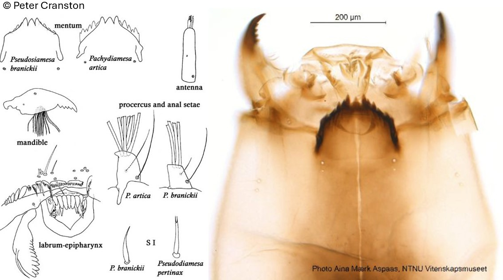

Pseudodiamesa (Goetghebuer, 1939)

Mentum
Dent médiane triangulaire et séparée de la 1ère dent latérale par une entaille profonde en forme de « V ». 7 paires de dents latérales. 6ème paire de dent latérale plus courte que la 5ème et 7ème paires.
Mandibules
Dent apicale plus courte que la largeur combinée de 4 dents internes.
Labre
SI et SII en forme de « pinceau » ou « lamelle ». Peigne de l’épipharynx composé de 7 longues écailles pointues. Prémandibules avec 8-11 dents pointues.
Ecologie
Les larves se rencontrent dans les milieux lentiques et lotiques. Elles peuvent être présente dans la zone profonde des lacs oligotrophes. P. nivosa est rencontrées dans la zone littorale et sublittorales des lacs.
Espèces recensées en France
2 : P. branickii, P. nivosa